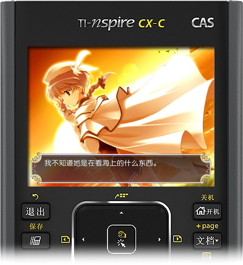

Free AVG engine for Ti-Nspire series
Free AVG engine for Ti-Nspire series
支持绝大部分文字类AVG运行，随时随地，享受攻略心仪女生的快感。
KuroScripter |
||
|
Nspire系列计算器制作的文字类游戏引擎。 |
简单易用 |
||
|
浏览剧情，欣赏CG，做出赢家的选择！尽在简 |

使用了KRS轻量化引擎，ONS精心移植运行起来更加爽快*
*装逼快感就是辣么爽。
无论是对话框，还是人物的立绘，都尽显华丽的风格，无论何时何处，都可与她共度精心打造过的时光。
提供了一整套简便易用的轻量化的开发工具*
与平易近人的教程帮助。为您的移植引导铺路。
*包含了nspire轻量化的模拟器以及demo、主程序。